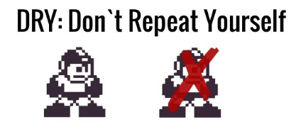
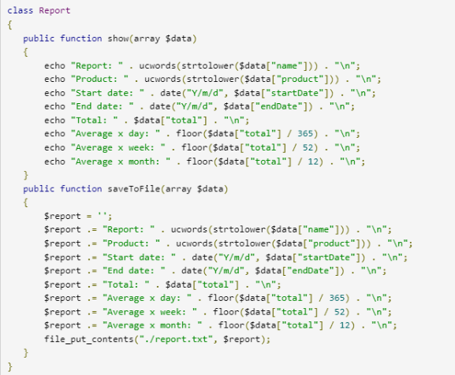
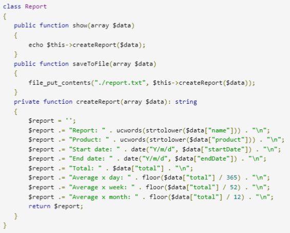

DRY
Dry

DRY (Don’t Repeat Yourself) es un principio del desarrollo software que establece que cada pieza de conocimiento debe tener una única representación autorizada, sin ambigüedades, dentro de un sistema.
Si se aplica correctamente, unamodificación en un elemento del sistema no requerirá un cambio en otros elementos no relacionados lógicamente.
Seguir el principio de programación DRY permite lograr una alta capacidad de mantenimiento del proyecto, facilidad para realizar cambios y pruebas de alta calidad.
Como no se debe hacer:
Es un primer paso pero no debe tomarse por una solución completa a este problema. Debemos encapsular nuestro código y no ir repitiendo estructuras y funciones a lo largo de objetos y ficheros.
Es algo que me he encontrado en multitud de ocasiones en las que para solucionar un problema, ya solucionado en el sistema anteriormente, se realiza el famoso «Corta-Pega» de grandes trozos de código.
Muchosdesarrolladores piensan que se ahorra tiempo con este tipo de soluciones o parches pero en mi experiencia acaban convirtiéndoseen una fuente de problemas y pérdidasde tiempo.

Problema:
Como programadores pasaremos gran parte de nuestro tiempo manteniendo software ya existente y raramente estaremos escribiendo códigooriginal. Ya sea por que estemos realizando cambios, refactorizando para mejorar el programa o arreglando un bug. Por tanto, nos conviene planificar y desarrollar nuestros sistemas pensando en ese mantenimiento desde el principio.
Consideremos un elemento de nuestro sistema con más de una representación. En algún punto durante la vida de nuestro sistema haremos una modificación de alguna de estas representaciones lo que la desfasaría del resto y puede hacer que entren en conflicto. En caso de que no sea así, significa que cada vez que cambiemos una representación de un elemento, debemos buscar el resto de representaciones y actualizarlas en consecuencia. Con forme nuestro sistema evoluciona esto deriva en tremendos dolores de cabeza a la hora de realizar cualquier modificación o mantenimiento.
No es algo que se limite solo al código, sinoque debe aplicarse al sistema al completo como esquemas de base de datos, test, documentación, etc. Este es el principal problema ya que debemos expresar nuestros elementos de forma que se propaguen por todas las capas del sistema.
Si el código no está duplicado, para cambiar la lógica, basta con hacer correcciones en un solo lugar y es más fácil probar una función (aunquemás compleja), en lugar de un conjunto de docenas del mismo tipo.
Como hacerlo:
